Score layout
+ Associated example files
NB: An exercise relating to the material covered in this tutorial can be found on the Exercises page.
Score layout in slippery chicken is done primarily using
keyword arguments to the make-slippery-chicken
function. Arguments are available for inserting elements into the
header, for defining attributes of the systems, and for attributes
related to measures. Not all arguments are available for both CMN and
LilyPond output.
slippery chicken itself does not produce printable
output. Instead, it generates the data and files necessary for
printable output to be produced by third-party software,
namely Common Music
Notation (CMN) and LilyPond. See
the installation page for details on
how to obtain these applications and prepare
slippery chicken for use with them. Specifics on how to
generate the output, once the keyword arguments have been set in
the make-slippery-chicken function, can be found on the
output page.
Because the printable output is not produced by slippery chicken itself, tweaking of scores (such as moving colliding symbols on the page etc.) is not possible using slippery chicken code. However, since both CMN and LilyPond produce vector-based graphics files, their output can be easily edited in a click-and-drag manner using third-party SVG software such as Adobe Illustrator or the open source alternative Inkscape. More on tweaking output using these applications can be found on the output page.
+ The header
The header in a score generally consists of the title and the
composer of the work. For LilyPond, these can be set within
the make-slippery-chicken function using
the :title and :composer keywords:
(make-slippery-chicken '+new-piece+ :title "A Slippery Chicken Piece" :composer "Joe Green"
LilyPond output for the above settings would produce the following header:
| 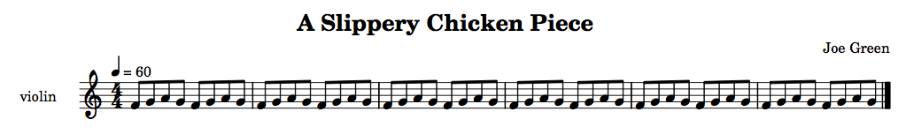 |
NB: Only English characters can be used in the title. Accents and umlauts etc. are not supported.
NB: Only the :title, and not
the :composer keyword, is available for CMN.
+ Key signatures
Key signatures in slippery chicken can be placed by two
means. Firstly, the user can place an initial key signature in the
first bar using the :key-sig argument of
the make-slippery-chicken function. Secondly, mid-piece
key changes can also be inserted using
the add-mark-to-note post-generation
editing method.
CMN vs. LilyPond
Key signatures are handled differently by CMN and LilyPond. CMN places the key signature as a graphic symbol, and does not automatically change accidentals in the subsequent musical notation. The user will have to enter pitches without accidentals in order for the score to appear correct, which will affect the MIDI output.
LilyPond allows the user to enter actual pitches, and will automatically remove any accidentals in the key signature from the subsequent music (or add natural signs accordingly), while maintaining the original pitch. The resulting MIDI output will accurately reflect the score.
Initial key signatures
Key signatures for the start of a piece can be placed by using
the :key-sig argument of
the make-slippery-chicken function and specifying a
note-name symbol (without octave indicator) and major
or minor, as such:
:set-palette '((1 ((ef4 f4 g4 af4 bf4 c5 d5 ef5)))) :key-sig '(ef major)
| 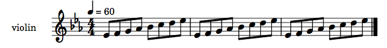 |
Key changes
Key changes after the first bar are added as a mark. A key signature
mark can be added for CMN output using
the post-generation editing
methods add-mark-before
or add-mark-before-note. For LilyPond, key signature
marks can be added using either of those methods or
the add-mark-to-note method.
The add-mark-before
and add-mark-before-note methods result in the key
signature being placed immediately before the specified event object
in the resulting score. The add-mark-to-note method
results in the key signature being placed immediately after
the specified event, so key changes at the bar line must be placed on
the last note of the previous bar.
The key-signature mark takes the form of a list, with the first element being the word key, followed by the note-name symbol and mode type:
(let* ((mini
(make-slippery-chicken
'+mini+
:ensemble '(((vn (violin :midi-channel 1))))
:key-sig '(ef major)
:avoid-melodic-octaves nil
:set-palette '((1 ((ef4 f4 g4 af4 bf4 c5 d5 ef5))))
:set-map '((1 (1 1 1)))
:rthm-seq-palette '((1 ((((4 4) - e e e e - - e e e e -))
:pitch-seq-palette ((1 2 3 4 5 6 7 8)))))
:rthm-seq-map '((1 ((vn (1 1 1))))))))
(add-mark-before-note mini 2 1 'vn '(key af major))
(add-mark-before-note mini 3 1 'vn '(key a major))
(cmn-display mini)
(add-mark-to-note mini 2 8 'vn '(key a major))
(add-mark-to-note mini 1 8 'vn '(key af major))
(write-lp-data-for-all mini))
| 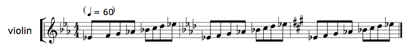 |
| 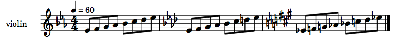 |
Key signatures in non-C scores
The key signature feature of slippery chicken does not
currently automatically transpose key signatures for non-C scores,
which is the default output for both cmn-display
and write-lp-data-for-all. A simple work-around is to
change the key signatures manually when generating scores in which
the players' parts are displayed as written pitches, or when
extracting parts (also see the section on extracting parts below).
Systems
+ Score order
The order in which instruments appear in the printable score output
is determined in slippery chicken by the order in which
players are listed in the ensemble block.
:ensemble '(((fl (flute :midi-channel 1))
(ob (oboe :midi-channel 2))
(hn (french-horn :midi-channel 3))
(tp (b-flat-trumpet :midi-channel 4))
(vn (violin :midi-channel 5))
(va (viola :midi-channel 6))
(vc (cello :midi-channel 7))))
| 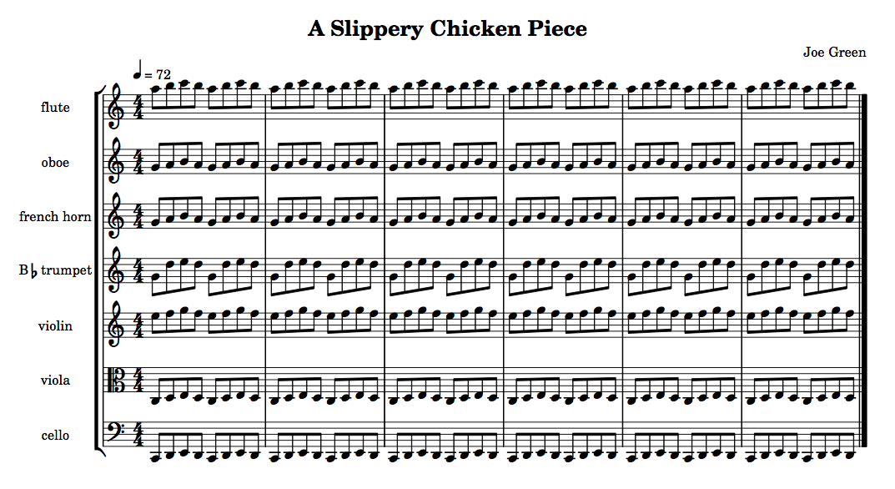 |
set-score-order method of
the slippery-chicken class.
+ Staff groups
By default, slippery chicken will place all of the players
of the ensemble into one group, resulting in a single group bracket
in the score that encloses all players, as seen in the example
above. However, the user can specify groupings of players using
the staff-groupings keyword argument.
This argument takes a list of integers that indicate how many
consecutive players from the ensemble are to be grouped
together in one bracket in each system of the score. Thus,
a staff-groupings value of '(2 2 3) applied
to the ensemble above would indicate groupings of 2 players
(fl and ob), 2 players (hn and
tp), and 3 players (vln, vla,
and vlc). When setting the value
of staff-groupings, the sum of the numbers in the list
must be equal to the total number of players in the ensemble.
:ensemble '(((fl (flute :midi-channel 1))
(ob (oboe :midi-channel 2))
(hn (french-horn :midi-channel 3))
(tp (b-flat-trumpet :midi-channel 4))
(vn (violin :midi-channel 5))
(va (viola :midi-channel 6))
(vc (cello :midi-channel 7))))
:staff-groupings '(2 2 3)
| 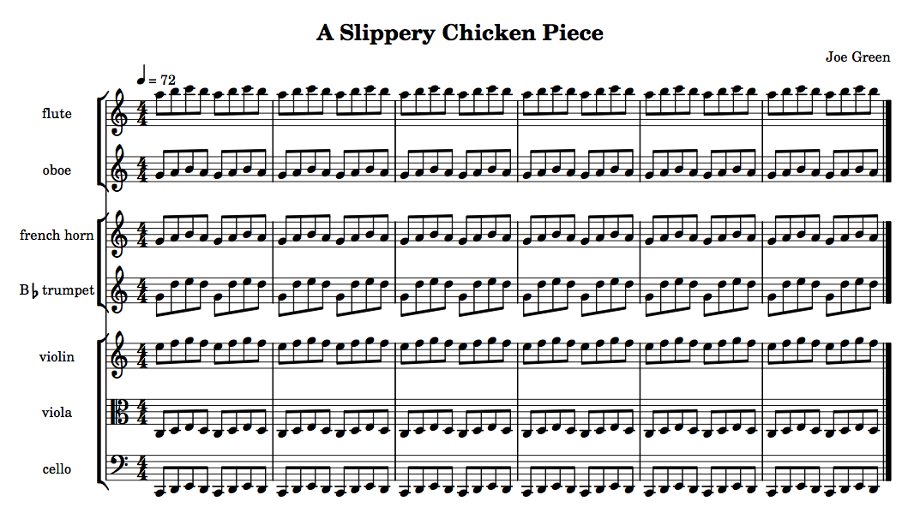 |
NB: CMN and LilyPond handle single-staff groups differently. By default, CMN will place a group bracket around single-staff groups while LilyPond will leave the group bracket out if there is only one instrument in that group.
+ Bars per system
CMN has an additional option for determining the number of bars
placed in each system. This can be done using
the :bars-per-system-map keyword argument of
the make-slippery-chicken function. This feature does
not affect LilyPond layout, as LilyPond determines bars-per-system
automatically.
The value passed to this argument must be a list of two-item lists, each of which consists of a bar number paired with a number of measures. An entry such as (3 5), for example, would indicate that CMN is to place 5 measures per system starting with bar 3.
The following, for example, will result in CMN output that has one measure in the first system, two in the next, three in the system after that (starting with bar 3), and four and five measures in the last two systems (starting with bars 7 and 11 respectively).
:bars-per-system-map '((1 1) (2 2) (3 3) (7 4) (11 5))
| 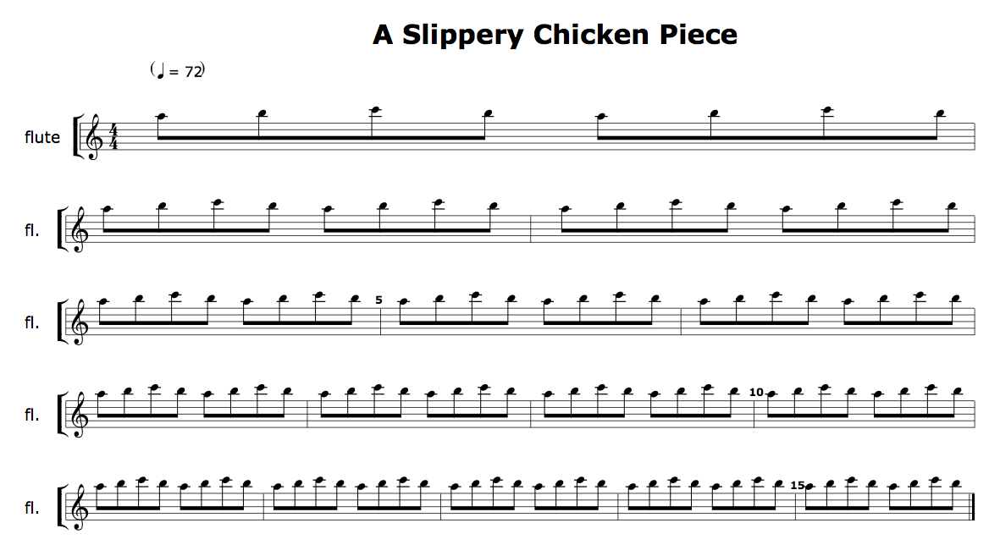 |
Bars
+ Bar line types
By default slippery chicken produces data for score output in which all bar lines are normal (i.e. single) except for the right bar line of the last measure, which is a final double bar line.
| 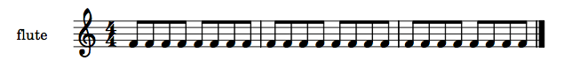 |
Bar line types can be changed by the user by means
of post-generation editing, using
the change-bar-line-type method. slippery
chicken currently has 6 bar line types, which are indicated by
number IDs. They are:
| 0 | normal |
| 1 | double |
| 2 | final double |
| 3 | begin repeat |
| 4 | begin and end repeat |
| 5 | end repeat |
The change-bar-line-type method takes as its first
argument a slippery-chicken object (or the variable it
has been assigned to), followed by the number of the bar whose right
bar line is to be changed, and the ID of the bar line type:
(let* ((bar-lines-piece
(make-slippery-chicken
'+bar-lines-piece+
:title "bar-lines piece"
:ensemble '(((fl (flute :midi-channel 1))))
:set-palette '((1 ((c4 d4 e4 f4 g4 a4 b4 c5))))
:set-map '((1 (1 1 1)))
:rthm-seq-palette '((1 ((((4 4) - e e e e - - e e e e -)))))
:rthm-seq-map '((1 ((fl (1 1 1))))))))
(change-bar-line-type bar-lines-piece 1 1)
(change-bar-line-type bar-lines-piece 3 5)
(write-lp-data-for-all bar-lines-piece :base-path "/tmp/"))
| 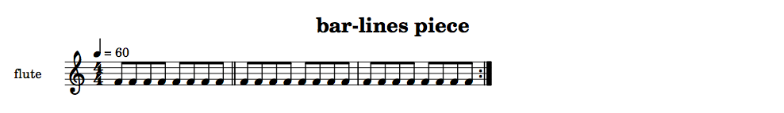 |
NB: This is a score function only. Repeat bar lines will not be reflected in playback with MIDI or CLM.
+ Rehearsal letters
Data for rehearsal letters can be attached either by including a
value for the rehearsal-letters keyword argument of
the make-slippery-chicken function, or through
post-generation editing.
The rehearsal-letters keyword argument takes a list of
measure numbers, to which consecutive rehearsal letters are
automatically added. No indication of the actual letter is
necessary.
:rehearsal-letters '(3 6 10)
| 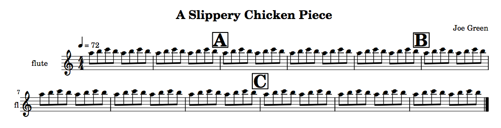 |
Placing individual rehearsals through post-generation editing is
done using the set-rehearsal-letter method, which takes
a slippery-chicken object (which can also be given as a
local variable or the global variable defined as the first argument
to the make-slippery-chicken function), a bar number,
and a letter as its arguments.
(set-rehearsal-letter mini 3 'A)
Difference between CMN and LilyPond
CMN and LilyPond differ in their manner of drawing rehearsal letters into a score. CMN enters the letter in a large, bold font, with no frame. LilyPond frames each letter in a thin box.
Right bar lines only
slippery chicken attaches rehearsal letters to bar lines,
which are only placed at the end of a given measure. When attaching a
letter to measure 5, therefore, the letter will actually be attached
to the right bar line of measure 4 (the user still
enters 5 in the rehearsal-letters
list). Thus, no rehearsal letter can be placed on the first measure
of a piece.
Adding rehearsal letters to all parts
By default, rehearsal letters are only added to those players' parts
that are at the top of each group. This means that rehearsal letters
will not be present in the other players' music when extracting
parts. The user can indicate that letters are to be added to all
players' parts by setting
the :rehearsal-letters-all-players argument of
the cmn-display and write-lp-data-for-all
methods to T. Although the rehearsal letters will now be
in all players' parts, LilyPond will still automatically only place
them above the groups in the score, while CMN will also place the
letters over all instruments in the score as well.
+ Clefs
By default, clefs in slippery chicken are handled
automatically based on the values of
the clefs, starting-clef,
and clefs-in-c slots of the
individual instrument objects. (See the page
on instruments and the
source code documentation
on make-instrument
for more detail on these three slots.)
The write-lp-data-for-all and cmn-display
methods will also automatically place mid-measure clefs by default if
a given instrument object has been defined with more
than one clef.
Disabling the automatic clef-changes feature of the output methods
The user can choose to prevent
the write-lp-data-for-all and cmn-display
methods from automatically placing clef changes by setting
their :auto-clefs keyword argument
to NIL. Disabling this feature prevents these methods
from running
the auto-clefs
algorithm internally before writing their output to a file. Turning
this feature off does not affect the placement of
the starting-clef for the given instrument.
(cmn-display +sc-object+ :file "/tmp/mini.eps" :auto-clefs nil) (write-lp-data-for-all +sc-object+ :base-path "/tmp/" :auto-clefs nil)
Using auto-clefs as a post-generation editing method instead
Setting the :auto-clefs argument to NIL
will require the user to manually add all clef changes. If
the user is basically satisfied with the results of
the auto-clefs algorithm but would like to delete or
move a number of the resulting clef changes manually, the method can
be disabled as a feature of the output methods and called as a
post-generation editing method in conjunction with
the add-clef
and delete-clefs
methods instead, prior to the call to cmn-display
or write-lp-data-for-all. This enables the user to
have slippery chicken automatically place clef changes and
then manually delete some of those clefs or insert others.
(auto-clefs +sc-object+) (delete-clefs +sc-object+ 'vc 1 5) (add-clef +sc-object+ 'vc 2 2 'tenor) (add-clef +sc-object+ 'vc 3 3 'treble) (write-lp-data-for-all +sc-object+ :base-path "/tmp/" :auto-clefs nil)
The add-clef and delete-clefs methods
The user can manually insert or remove a clef for a given player at
any point in the piece using
the post-generation editing
methods add-clef
and delete-clefs. If
these methods are used, the :auto-clefs argument within
the calls to cmn-display
or write-lp-data-for-all must be set
to NIL, as changes made using add-clef
and delete-clefs will otherwise be overwritten.
The add-clef method can be used to place a clef sign
before a given event object (including rests) in the score by
specifying the player, bar number, event number, and new clef:
(let* ((mini
(make-slippery-chicken
'+mini+
:ensemble '(((vc (cello :midi-channel 1))))
:tempo-map '((1 (q 72)))
:set-palette '((1 ((g3 a3 b3 c4 d4 e4 f4 g4))))
:set-map '((1 (1 1 1)))
:rthm-seq-palette '((1 ((((4 4) - e e e e - - e e e e -))
:pitch-seq-palette (1 2 3 4 5 6 7 8))))
:avoid-melodic-octaves nil
:rthm-seq-map '((1 ((vc (1 1 1))))))))
(add-clef mini 'vc 2 2 'tenor)
(add-clef mini 'vc 3 3 'treble)
(write-lp-data-for-all mini :base-path "/tmp/" :auto-clefs nil))
| 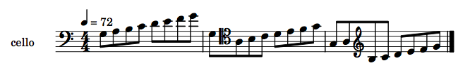 |
The delete-clefs method functions in a similar manner,
but does not require a new clef to be specified, and does require
that a clef is already present in the given event object:
(let* ((mini
(make-slippery-chicken
'+mini+
:ensemble '(((vc (cello :midi-channel 1))))
:tempo-map '((1 (q 72)))
:set-palette '((1 ((g3 a3 b3 c4 d4 e4 f4 g4))))
:set-map '((1 (1 1 1)))
:rthm-seq-palette '((1 ((((4 4) - e e e e - - e e e e -))
:pitch-seq-palette (1 2 3 4 5 6 7 8))))
:avoid-melodic-octaves nil
:rthm-seq-map '((1 ((vc (1 1 1))))))))
(add-clef mini 'vc 2 2 'tenor)
(add-clef mini 'vc 3 3 'treble)
(delete-clefs mini 'vc 2 2)
(delete-clefs mini 'vc 3 3)
(write-lp-data-for-all mini :base-path "/tmp/" :auto-clefs nil))
| 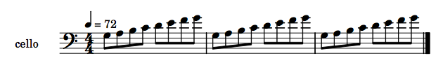 |
C- scores and generating parts
+ C-scores
By default, all scores generated from the data of
a slippery-chicken object will be produced at written
pitch. Scores at concert pitch, or "in C", can be generated by
setting the :in-c argument of
the cmn-display and write-lp-data-for-all
methods to T.
Default generation at written pitch:
| 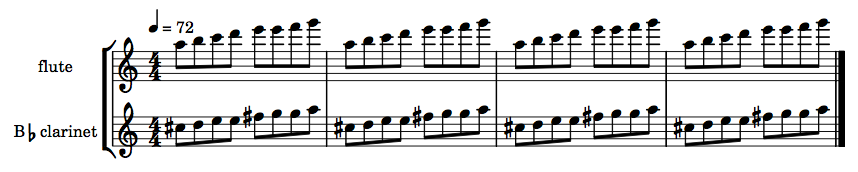 |
Setting the :in-c argument to T:
(write-lp-data-for-all mini :base-path "/tmp/" :in-c t)
…produces C-scores:
| 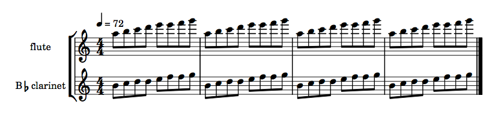 |
NB: If the clefs-in-c slot of a
given instrument object is set, the clefs used in C
scores for a given instrument will be drawn only from those
clefs. This can be helpful, for instance, when writing for an
instrument that sounds in the bass clef but is written in the treble,
such as the bass clarinet or the baritone saxophone.
+ Parts and sectional scores
CMN
Generating parts using cmn-display is done by
specifying a value for the optional keyword
argument :players. This argument takes a list of one or
more of the player IDs from the ensemble
and produces scores with only those players.
Parts are generated for individual players in CMN by setting
the players keyword argument to a list of only one
player.
(cmn-display mini :file "/tmp/mini.eps" :players '(tbn))
Using cmn-display to produce a sectional score that
contains only the music for the
players hrn, tpt, tbn,
and tba, can be done as such:
(cmn-display mini :file "/tmp/mini.eps" :players '(hrn tpt tbn tba))
LilyPond
The files required to generate parts using LilyPond are produced
automatically by the write-lp-data-for-all method, as
described on the output page.
All LilyPond parts are automatically generated in the transposing key
of the given instruments regardless of the value of
the :in-c argument, which only affects
the -score.ly file.
Sectional scores in LilyPond are produced in the same manner as for
CMN, by using the :players argument. The individual
parts for this sectional score will also be automatically
generated.
(write-lp-data-for-all mini :base-path "/tmp/" :players '(hrn tpt tbn tba))
+
Some remarks on piano music
Anyone who has input a piano score into notation software knows that it's not as easy as, say, creating a woodwind part. First of all there are chords, then you have two staves, on top of which you might have multiple parts per stave, and on top of that you might have groups of beamed notes that cross back and forth from the left to the right hand (so-called cross-staff notation).
From the perspective of slippery-chicken, there's no difference
whatsoever between a keyboard part and any other part. You add a piano to an
ensemble as with any other player by setting the instrument to
'piano. But each new player gets only one new staff, so if you want
two staves you should probably add a second 'player'.
It's most convenient to think of the two hands as two separate 'players' and
create separate contrapuntal parts for them. I've made several piano pieces with
slippery-chicken and that's generally been my approach. In order to
aid this, the piano-lh instrument is available---this is the same
as the piano but it has no staff name and begins in the bass clef. You can then
keep the two hands within a manageable range by using the set limits arguments to
make-slippery-chicken, for example:
:set-limits-high '((piano-lh (0 b3 100 b3))) :set-limits-low '((piano-rh (0 c4 100 c4)))
Chords are handled as with any other instrument but bear in mind that you can
specify your own chord-selection function and apply these to any
instrument. More on this is given in the documentation for chords and in the section Indicating chords in the
pitch-seq curve in the documentation for pitch-seq basics. Note that multiple voices on
one stave are not supported in slippery-chicken so if you need to
do this then your only option is to create several parts in
slippery-chicken then combine them onto one stave via MIDI import
into the notation software of your choice.
Cross-staff notation is possible in slippery-chicken but only
when you use Lilypond output. In order to accomplish this you'll need to create
a dummy part which has no notes then simply add marks to events in order to
switch back and forth between staves (this could be automated by examining pitch
height: see below). The staff name you pass as part of the mark will be the same
as the lower case version of your player name but with all - and _ characters
removed. If you're in any doubt, look at the "music = { " block in the generated
Lilypond -def.ly file. In any case here's a complete example along with the
output notation:
(let ((sc
(make-slippery-chicken
'+cross-staff+
:ensemble '(((rh (piano))
(lh (piano-lh))))
:set-palette
'((1 ((c1 a1 ds2 cs3 g3 d4 f4 bf4 e5 b5 gs6 fs7)))
(2 ((bf1 ef2 af2 g3 cs4 e4 c5 e5 b5 f6 d7 fs7 a7))))
:set-map '((1 (1 2)))
:rthm-seq-palette '((1 ((((2 4) - e e e e -) (- e e e e -))
:pitch-seq-palette ((1 2 (7) (8) 1 2 1 (8))))))
:rthm-seq-map '((1 ((lh (1 1))))))))
;; we don't always want to use the double bass clef
(set-standard-instrument-slot 'clefs '(bass) 'piano-lh)
(add-mark-before-note sc 3 4 'lh '(staff "rh"))
(add-mark-before-note sc 4 1 'lh '(staff "lh"))
(add-mark-before-note sc 4 4 'lh '(staff "rh"))
(lp-display sc :title nil :dummy-staves 'rh))
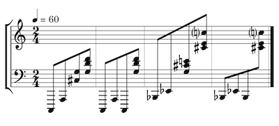
If you're using a lot of (nested) tuplets you might get Lilypond warnings similar to "no viable initial configuration found: may not find good beam slope" but in my experience you can ignore these and still get good output.
Here's an illustrative example (i.e. incomplete code so it won't run) of how to do automatic cross-staff notation:
(flet ((change-staff (e which)
(add-mark-before e (list 'staff which))))
(next-event +jitterbug+ 'solo t 1)
(loop with current-clef = 'bass
for event = (next-event +jitterbug+ 'solo t nil nil)
while event
for pht = (get-degree event :average t)
for clef = (if (> pht 59) 'treble 'bass)
do
(cond ((and (eq clef 'treble) (eq current-clef 'bass))
(setq current-clef 'treble)
(change-staff event "rh"))
((and (eq clef 'bass) (eq current-clef 'treble))
(setq current-clef 'bass)
(change-staff event "solo")))))